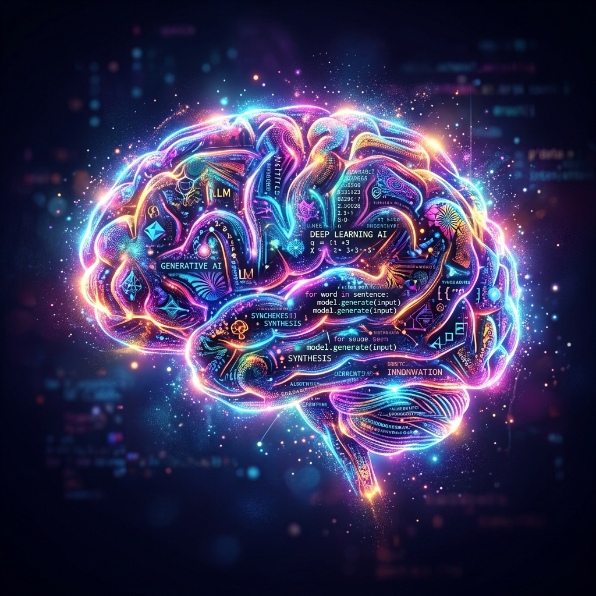
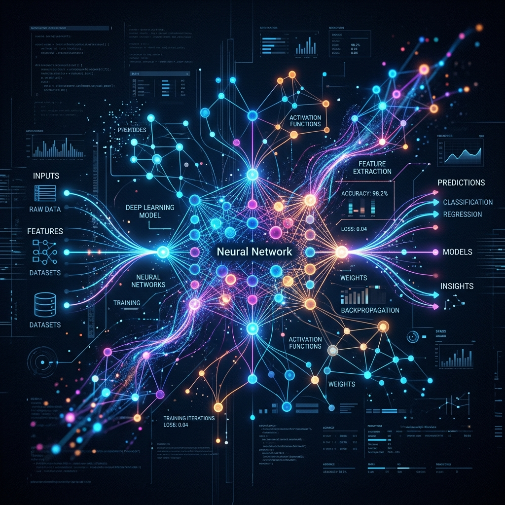

Core Learning Modules

AI & LLM Fundamentals
Understand Tokens, Transformers, Embeddings, Temperature, and how an LLM actually generates text.
Start ModuleClaude & Prompt Engineering
Master Claude Code, understand tokens & context, write SKILL.md files, and connect Claude with open-source agents.
Start ModuleRAG & Vector Search
Connect LLMs to your private enterprise data using Vector Databases, embeddings, and hybrid search.
Start ModuleAgentic AI Systems
Build autonomous agents that plan, use tools, reflect, and solve complex multi-step problems.
Start ModuleModel Context Protocol
Standardize how your AI models securely access external tools, APIs, and data sources.
Start ModuleAdvanced Engineering
LangGraph Deep Dive
Build highly controllable, stateful, multi-actor applications with LLMs using graphs.
Start ModuleAgent Engineering
Designing intelligent systems with memory, task planning, and evaluation loops.
Start ModuleMulti-Agent Systems
Orchestrating teams of specialized AI agents to solve problems collaboratively.
Start ModuleGraphRAG & Knowledge Graphs
Overcoming Vector RAG limitations by understanding relationships and global context.
Start ModuleArchitecture & Infrastructure
Architecture Patterns
Visual guide to the 7 core design patterns used in modern AI engineering.
Start ModuleInfra & Model Serving
Hardware and software to serve open-source LLMs in production efficiently.
Start ModuleAI Gateways
Standardizing API access, model routing, and cost control across multiple LLMs.
Start ModuleProduction & Operations

Advanced Observability
Tracing multi-step agent executions and managing token usage (OpenTelemetry).
Start ModuleAI Evaluation (RAGAS)
Score LLM outputs with Faithfulness and Context Recall using Golden Datasets.
Start ModuleAdvanced Security
Protecting agentic systems from sophisticated jailbreaks and data exfiltration.
Start ModuleOpen Source AI & FinOps
Run Ollama locally, optimize token costs, and implement dynamic routing.
Start ModuleAI Relationship Map
Interactive, clickable visual graph of how all the AI Engineering concepts connect.
Start Module